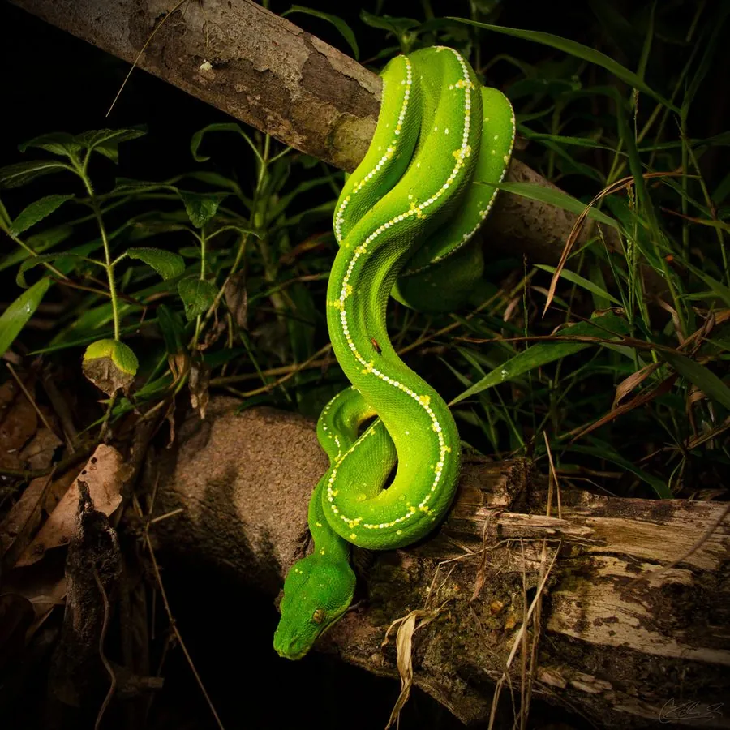

爬行动物 · 动物界
绿树蟒 Morelia viridis

新几内亚与澳大利亚北部的树栖蟒蛇，成体通体翠绿，幼体却是黄色或红色，属于典型的树栖蛇类，善于在枝头伏击猎物。
- 分类
- 门脊索动物门纲爬行纲目有鳞目科蟒科属树蟒属
- 栖息环境
- 热带雨林的中上层树冠与藤蔓间
- 地理分布
- 新几内亚岛、印度尼西亚部分岛屿及澳大利亚昆士兰北部
- 保护级别
- IUCN 无危（LC）；CITES 附录 II；非中国原产
物种志
绿树蟒体长 1.5–2 米，身体细长而粗壮，头部较大且与颈部区分明显，成体通体翠绿，背部常有一串白色或黄色的斑块，腹部淡黄绿色；幼体则呈鲜黄、橙红或红褐色，长大后逐渐变为绿色。它的尾巴具有很强的缠绕力，可以牢牢挂在树枝上。
它分布于新几内亚岛、印度尼西亚部分岛屿和澳大利亚昆士兰北部的热带雨林，栖息于树冠层，夜间伏击鼠类、小型鸟类和蜥蜴，捕猎时会用身体前段悬空保持“S”形，等待猎物靠近后迅速出击。每年繁殖季雌蟒产卵 6–25 枚，盘在卵上孵卵，孵化期约 45–55 天。它因体色艳丽而成为受欢迎的宠物蟒，野外种群受国际公约保护，在中国属于外来物种。
形态与习性
- 食性鼠类、小型鸟类和蜥蜴
- 体长1.5–2 m
- 体重约 1–2 kg
- 寿命约 15–20 年
- 繁殖卵生，每窝 6–25 枚，孵化约 45–55 天
- 活动节律夜行性，白天盘在树枝上休息
- 体色幼体黄、橙或红褐色，成体转为翠绿
趣味知识
- 绿树蟒幼体是黄色或红色的，随着长大才逐渐变成成体的翠绿色。
- 它常把身体前段悬在空中摆成“S”形，等猎物经过时突然出击。
- 绿树蟒的尾巴缠绕力很强，能把自己牢牢固定在细枝上。